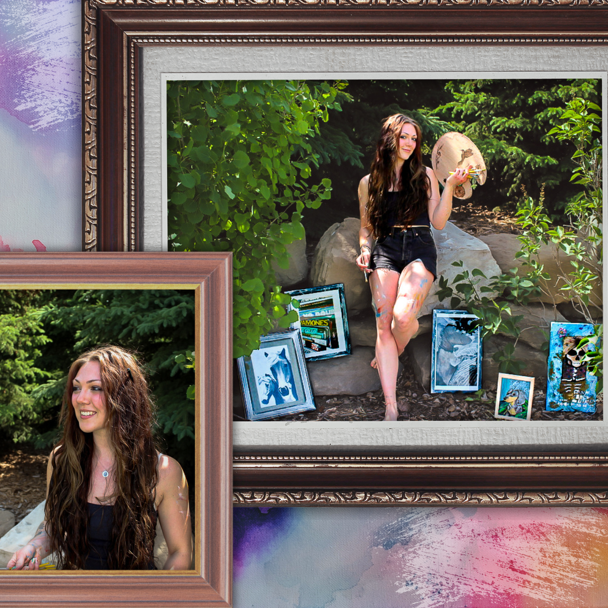

Welcome to the Life of Riley! I'm a freelance artist and designer based out of calgary, AB. Take off your coat and stick around for blog posts, local artist spotlights, and more!
Hi angels!! My name is Riley. I was born and raised in Airdrie, AB, and I’m working on paving my way as a freelance designer and artist.
I’ve been an artist at heart since I can remember, some of my fondest memories are from doodling in my sketchbook by the campfire when I was little. I was an “art kid” all throughout high-school, and scored a 4/5 on my AP portfolio during my senior year. I started my graphic design diploma at SAIT in September, and I am beyond excited to share all of this new knowledge with my clients. I’m currently employed full time, however I will always make time for the things that I love. In the past, I've created gifts for Christmases and birthdays, as well as things "just because", thus leading me here. In this next step I’d love to spread my love of creativity as far and wide as I can. I offer custom work, encompassing any and every vision you may have. With experience working with a broad spectrum of mediums, such as acrylic, watercolour, pastels, graphite, and so on and so forth. I hope you’re as excited as I am for this next step in my creative journey!| Portfolio Designs- Mockup movie posters | |
|---|---|
| "Dystopian Disillusions" | |
| "Washed Up" | |